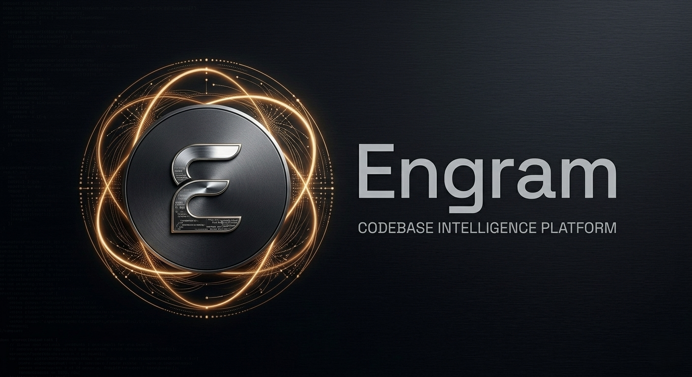

Safer change
See execution paths, upstream callers, contracts, regression history, and likely blast radius before work begins.

Engram is the structural understanding and change-intelligence layer for complex software estates.
It connects code with tickets, reviews, decision history, ownership, call paths, and cross-repository dependencies. Developers and AI tools can answer not only “where is it?” but “why is it this way, who understands it, and what could break if we change it?” Self-hosted inside your perimeter and available over MCP.
See execution paths, upstream callers, contracts, regression history, and likely blast radius before work begins.
Orient developers quickly with repository briefings, architecture views, decision context, and implementation lineage.
Give coding agents current, permission-aware organisational context instead of a handful of open files.
Understand intent across languages with hybrid structural and semantic retrieval. Pluggable embedding providers include Azure OpenAI, Gemini, Voyage, and Ollama.
Connect tickets, commits, PR reviews, code reviews, compiled artifacts, deployments, call graphs, import graphs, and type hierarchies into a single, queryable knowledge graph with temporal scoring.
Materialised contract maps surface producers and consumers across HTTP APIs, queues, and internal NuGet/npm packages. One question, every caller. No per-repo blind spots.
Static call-site extraction with multi-pass name resolution across 14 languages. Trace forward execution from any HTTP route or entry point. Reverse BFS finds all upstream callers with log-scaled risk scoring. Know the blast radius before you touch a line.
35+ MCP tools plus a first-party CLI and transparent, secure API proxy for AI assistants. Search, trace, impact, contract, history, and administration tools share one permission-aware context layer.
Louvain clustering over call graph edges discovers architectural modules, tracks their split/merge lineage, identifies entry points, and generates architecture documentation without LLM cost.
Code rarely explains why it exists. Engram reconnects implementation with the evidence behind it.
Trace a subsystem through work items, commits, reviews, and retained historical evidence to understand how it reached its current shape.
Index ADR and RFC citations, comments, and authored rationale as evidence attached to the symbols and files they describe.
Ask what was known at a point in time, identify stale knowledge during rewrites, and distinguish current architecture from historical residue.
Explainable signals for leaders and engineers - not another opaque code-quality score.
Executive and technical snapshots surface fragility, test reachability, regression history, semantic anomalies, and architecture drift.
Map recent domain knowledge, ownership concentration, and places where the code's practical ownership no longer matches the organisation chart.
Convergent-Evolution Radar identifies semantically similar implementations that evolved independently across repositories.
Flag actively rewritten subsystems where cached documentation and historical assumptions are becoming stale.
Add defect-density and change-history evidence to impact analysis so risky areas receive proportionate review.
Turn validated evidence into deterministic technical-debt candidates while keeping filing and prioritisation under human control.
Engram brings evidence into existing tools instead of demanding another destination.
Use 35+ MCP tools from AI coding clients, the first-party engram CLI in a terminal, or Explore for interactive search and graph navigation.
Annotate GitHub pull requests with impact, dependency, and historical context so reviewers see risk at the decision point.
Export self-contained interactive HTML graphs and optionally expose ask-the-codebase workflows through Teams or Slack.
Per-community architecture overviews with entry points, and per-directory API surface bundles with import graphs. Compiled at index time.
Per-symbol bundles with callers, callees, tickets, review context, commits, and release signals. Plus materialized cross-repo contract topology. Zero LLM cost at query time.
Engram runs against working codebases that change all day. The worker pipeline is designed for that.
Engram is in production at House of Travel, indexing more than 150 repositories across 14 languages with Git and TFVC running side by side.
Workers heartbeat into the queue. If a pod disappears mid-job, another picks the work up from where it stopped. No silent stalls, no duplicate runs.
Jobs interrupted by a rolling deploy are auto-restarted at the front of the queue. Canary deploys ship with telemetry baselines, dev environments serialise to keep things sane.
Priority-weighted dequeue and dynamic per-job timeouts. A 30-minute mono-repo full reindex won't starve the canary checking a five-file change.
Recent work strengthened index integrity across interruptions, stale source revisions, provider pagination, webhook replay, rate limits, drift signals, alert delivery, retrieval security, and rolling deployments.
Three modes, pick per repo or per run:
Add your Engram MCP configuration to an AI tool.
{ "mcpServers": { "engram": { "url": "https://..." } } }
A dashboard for the people who run Engram, not just the people who query it.
Keep source, context, access decisions, and operating evidence inside your environment.
Repository-level authorization applies across MCP, search, and Explore so users and AI tools retrieve only repositories they are entitled to access.
Deploy versioned releases through an official OCI Helm chart or generic Docker Compose package, with build information and offline license verification.
Monitor drift, failures, readiness, rate limits, and queue health. Supported backup, export, and restore workflows provide a practical disaster-recovery path.
Annual self-hosted licensing. Every tier includes the full platform, unlimited repositories, and unlimited agent or MCP queries.
US$15k/year
For engineering teams bringing codebase intelligence into daily AI-assisted development.
US$36k/year
For larger teams standardising Engram across multiple product areas and shared services.
From US$75k/year
For organisation-wide deployments, complex environments, and rollout support.
Run Engram for 60 days against your own codebase for US$3k. The pilot fee is credited if you convert to an annual license.
Versioned Docker Compose and OCI Helm deployments, installed remotely or in person, with backup and restore support.
Contact Mitch at: mitch@pragmaticcoder.com